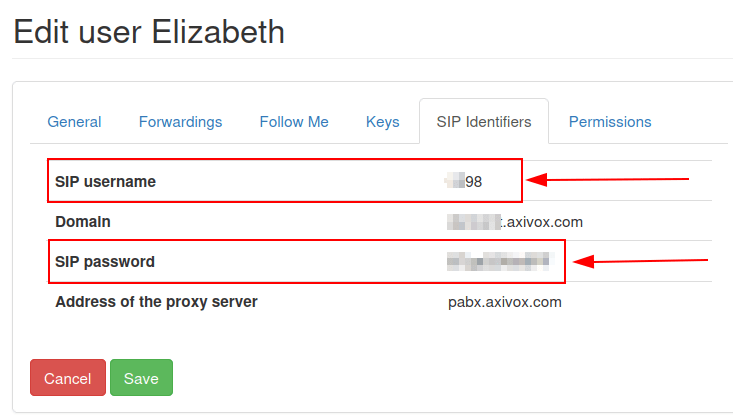

Servicios de VoIP en Odoo con Axivox¶
Introducción¶
Puede configurar el VoIP (Voz sobre protocolo de internet) de Odoo para que funcione junto con Axivox. En ese caso, no se necesita un servidor Asterisk ya que la infraestructura se aloja y se gestiona en Axivox.
To use this service, contact Axivox to open an account. Before doing so, verify that Axivox covers the company’s area, along with the areas the company’s users wish to call.
Configuración¶
Para configurar Axivox en Odoo, vaya a y busque VoIP e instale el módulo.
Después, vaya a y complete el campo Asterisk (VoIP):
Dominio OnSIP: configure el dominio que creó Axivox para la cuenta (por ejemplo,
yourcompany.axivox.com)WebSocket: escriba
wss://pabx.axivox.com:3443.Entorno VoIP: configurado como Producción

Truco
Ingrese al dominio desde el panel administrativo de Axivox desde https://manage.axivox.com/. Después de iniciar sesión en el portal, vaya a .
Configurar el usuario VoIP en Odoo¶
Después, el usuario estará configurado en Odoo, lo cual se debe hacer para cada usuario de Axivox/Odoo que use VoIP.
En Odoo, vaya a , después abra el formulario del usuario que quiera y configure el VoIP (Voz sobre protocolo de internet. En la pestaña de Preferencias llene la sección Configuración VOIP:
Nombre de usuario VoIP / Extensión del navegador = Nombre de usuario OnSIP.
Secreto VoIP: (Axivox) Contraseña SIP.
Número de dispositivo externo: extensión de teléfono externo SIP
Cómo realizar llamadas desde el móvil: método para hacer llamadas en un dispositivo móvil
Usuario de autorización OnSIP: (Axivox) nombre de usuario SIP
Llamadas de otro dispositivo: opción para siempre transferir las llamadas telefónicas a un dispositivo auricular.
Rechazar todas las llamadas entrantes: opción para rechazar todas las llamadas entrantes

Truco
Ingrese al dominio desde el panel administrativo de Axivox desde https://manage.axivox.com/. Después de iniciar sesión en el portal, vaya a .
Importante
Al ingresar la contraseña SIP en la pestaña de preferencias del usuario debe escribir el valor, no puede copiar y pegarlo, si lo hace causará un error 401 de rechazo del servidor.